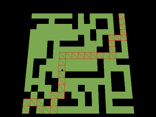

サンプルプログラム ３Ｄモデルのポリゴンを使用した最短経路探索

キャラクターの行動プログラムなどを組んでいると「ある地点からある地点」まで
キャラクターを移動させたいときがあります。
「ある地点からある地点」の間に障害物が一切無ければ一直線に目標の地点に移動
させれば良いのですが、障害物がある場合は目標の地点に辿り着くための経路を
探索しなければなりません。
そんなときにあるのが最短経路探索のアルゴリズムです。
このサンプルプログラムではアルゴリズムの一つのダイクストラ法を使用しています。
ダイクストラ法は複数の頂点とそれぞれの頂点を結ぶ線があって、スタートの頂点から
ゴールの頂点まで最も短い距離で辿り着く経路を探索するためのアルゴリズムですが、
このサンプルでは各ポリゴンの中心座標をダイクストラ法での中間地点としています。
最初に各ポリゴン同士の連結情報を構築して、その情報を元にダイクストラ法で
スタートとなるポリゴンからゴールとなるポリゴンまでの経路を探索するという手順を踏みます。
経路を導き出した後、その経路に沿って球体を移動させるという処理を組んでいますが、
導き出された経路をそのまま辿ると各ポリゴンの中心座標を辿って動きがぶれてしまうので、
一直線に行ける経路の中間地点を導き出してそこに一直線で行くようにしています。
プログラムの実行に必要なファイルはこちら
#include "DxLib.h"
#include <malloc.h>
// ポリゴン同士の連結情報を保存する為の構造体
struct POLYLINKINFO
{
int LinkPolyIndex[ 3 ] ; // ポリゴンの三つの辺とそれぞれ隣接しているポリゴンのポリゴン番号( -1：隣接ポリゴン無し -1以外：ポリゴン番号 )
float LinkPolyDistance[ 3 ] ; // 隣接しているポリゴンとの距離
VECTOR CenterPosition ; // ポリゴンの中心座標
} ;
// 経路探索処理用の１ポリゴンの情報
struct PATHPLANNING_UNIT
{
int PolyIndex ; // ポリゴン番号
float TotalDistance ; // 経路探索でこのポリゴンに到達するまでに通過したポリゴン間の距離の合計
int PrevPolyIndex ; // 経路探索で確定した経路上の一つ前のポリゴン( 当ポリゴンが経路上に無い場合は -1 )
int NextPolyIndex ; // 経路探索で確定した経路上の一つ先のポリゴン( 当ポリゴンが経路上に無い場合は -1 )
PATHPLANNING_UNIT *ActiveNextUnit ; // 経路探索処理対象になっている次のポリゴンのメモリアドレスを格納する変数
} ;
// 経路探索処理で使用する情報を保存する為の構造体
struct PATHPLANNING
{
PATHPLANNING_UNIT *UnitArray ; // 経路探索処理で使用する全ポリゴンの情報配列が格納されたメモリ領域の先頭メモリアドレスを格納する変数
PATHPLANNING_UNIT *ActiveFirstUnit ; // 経路探索処理対象になっているポリゴン群の最初のポリゴン情報へのメモリアドレスを格納する変数
PATHPLANNING_UNIT *StartUnit ; // 経路のスタート地点にあるポリゴン情報へのメモリアドレスを格納する変数
PATHPLANNING_UNIT *GoalUnit ; // 経路のゴール地点にあるポリゴン情報へのメモリアドレスを格納する変数
} ;
// 探索した経路を移動する処理に使用する情報を纏めた構造体
struct PATHMOVEINFO
{
int NowPolyIndex ; // 現在乗っているポリゴンの番号
VECTOR NowPosition ; // 現在位置
VECTOR MoveDirection ; // 移動方向
PATHPLANNING_UNIT *NowPathPlanningUnit ; // 現在乗っているポリゴンの経路探索情報が格納されているメモリアドレスを格納する変数
PATHPLANNING_UNIT *TargetPathPlanningUnit ; // 次の中間地点となる経路上のポリゴンの経路探索情報が格納されているメモリアドレスを格納する変数
} ;
int StageModelHandle ; // ステージモデルハンドル
MV1_REF_POLYGONLIST PolyList ; // ステージモデルのポリゴン情報
POLYLINKINFO *PolyLinkInfo ; // ステージモデルの全ポリゴン分の「ポリゴン同士の連結情報」の配列が格納が格納されたメモリエリアの先頭アドレスを格納する変数
PATHPLANNING PathPlanning ; // 経路探索処理用の構造体
PATHMOVEINFO PathMove ; // 探索した経路を移動する処理に使用する情報を纏めた構造体
int CheckOnPolyIndex( VECTOR Pos ) ; // 指定の座標の直下、若しくは直上にあるポリゴンの番号を取得する( ポリゴンが無かった場合は -1 を返す )
void SetupPolyLinkInfo( void ) ; // ポリゴン同士の連結情報を構築する
void TerminatePolyLinkInfo( void ) ; // ポリゴン同士の連結情報の後始末を行う
bool CheckPolyMove( VECTOR StartPos, VECTOR TargetPos ) ; // ポリゴン同士の連結情報を使用して指定の二つの座標間を直線的に移動できるかどうかをチェックする( 戻り値 true:直線的に移動できる false:直線的に移動できない )
bool CheckPolyMoveWidth( VECTOR StartPos, VECTOR TargetPos, float Width ) ; // ポリゴン同士の連結情報を使用して指定の二つの座標間を直線的に移動できるかどうかをチェックする( 戻り値 true:直線的に移動できる false:直線的に移動できない )( 幅指定版 )
bool SetupPathPlanning( VECTOR StartPos, VECTOR GoalPos ) ; // 指定の２点の経路を探索する( 戻り値 true:経路構築成功 false:経路構築失敗( スタート地点とゴール地点を繋ぐ経路が無かった等 ) )
void TerminatePathPlanning( void ) ; // 経路探索情報の後始末
void MoveInitialize( void ) ; // 探索した経路を移動する処理の初期化を行う関数
void MoveProcess( void ) ; // 探索した経路を移動する処理の１フレーム分の処理を行う関数
bool RefreshMoveDirection( void ) ; // 探索した経路を移動する処理で移動方向を更新する処理を行う関数( 戻り値 true:ゴールに辿り着いている false:ゴールに辿り着いていない )
// 指定の座標の直下、若しくは直上にあるポリゴンの番号を取得する( ポリゴンが無かった場合は -1 を返す )
int CheckOnPolyIndex( VECTOR Pos )
{
int i ;
VECTOR LinePos1 ;
VECTOR LinePos2 ;
HITRESULT_LINE HitRes ;
MV1_REF_POLYGON *RefPoly ;
// 指定の座標のY軸方向に大きく伸びる線分の２座標をセット
LinePos1 = VGet( Pos.x, 1000000.0f, Pos.z ) ;
LinePos2 = VGet( Pos.x, -1000000.0f, Pos.z ) ;
// ステージモデルのポリゴンの数だけ繰り返し
RefPoly = PolyList.Polygons ;
for( i = 0 ; i < PolyList.PolygonNum ; i ++, RefPoly ++ )
{
// 線分と接するポリゴンがあったらそのポリゴンの番号を返す
HitRes = HitCheck_Line_Triangle(
LinePos1,
LinePos2,
PolyList.Vertexs[ RefPoly->VIndex[ 0 ] ].Position,
PolyList.Vertexs[ RefPoly->VIndex[ 1 ] ].Position,
PolyList.Vertexs[ RefPoly->VIndex[ 2 ] ].Position
) ;
if( HitRes.HitFlag )
{
return i ;
}
}
// ここに来たら線分と接するポリゴンが無かったということなので -1 を返す
return -1 ;
}
// ポリゴン同士の連結情報を構築する
void SetupPolyLinkInfo( void )
{
int i ;
int j ;
POLYLINKINFO *PLInfo ;
POLYLINKINFO *PLInfoSub ;
MV1_REF_POLYGON *RefPoly ;
MV1_REF_POLYGON *RefPolySub ;
// ステージモデル全体の参照用メッシュを構築する
MV1SetupReferenceMesh( StageModelHandle, 0, TRUE ) ;
// ステージモデル全体の参照用メッシュの情報を取得する
PolyList = MV1GetReferenceMesh( StageModelHandle, 0, TRUE ) ;
// ステージモデルの全ポリゴンの連結情報を格納する為のメモリ領域を確保する
PolyLinkInfo = ( POLYLINKINFO * )malloc( sizeof( POLYLINKINFO ) * PolyList.PolygonNum ) ;
// 全ポリゴンの中心座標を算出
PLInfo = PolyLinkInfo ;
RefPoly = PolyList.Polygons ;
for( i = 0 ; i < PolyList.PolygonNum ; i ++, PLInfo ++, RefPoly ++ )
{
PLInfo->CenterPosition =
VScale( VAdd( PolyList.Vertexs[ RefPoly->VIndex[ 0 ] ].Position,
VAdd( PolyList.Vertexs[ RefPoly->VIndex[ 1 ] ].Position,
PolyList.Vertexs[ RefPoly->VIndex[ 2 ] ].Position ) ), 1.0f / 3.0f ) ;
}
// ポリゴン同士の隣接情報の構築
PLInfo = PolyLinkInfo ;
RefPoly = PolyList.Polygons ;
for( i = 0 ; i < PolyList.PolygonNum ; i ++, PLInfo ++, RefPoly ++ )
{
// 各辺に隣接ポリゴンは無い、の状態にしておく
PLInfo->LinkPolyIndex[ 0 ] = -1 ;
PLInfo->LinkPolyIndex[ 1 ] = -1 ;
PLInfo->LinkPolyIndex[ 2 ] = -1 ;
// 隣接するポリゴンを探すためにポリゴンの数だけ繰り返し
RefPolySub = PolyList.Polygons ;
PLInfoSub = PolyLinkInfo ;
for( j = 0 ; j < PolyList.PolygonNum ; j ++, RefPolySub ++, PLInfoSub ++ )
{
// 自分自身のポリゴンだったら何もせず次のポリゴンへ
if( i == j )
continue ;
// ポリゴンの頂点番号0と1で形成する辺と隣接していたら隣接情報に追加する
if( PLInfo->LinkPolyIndex[ 0 ] == -1 &&
( ( RefPoly->VIndex[ 0 ] == RefPolySub->VIndex[ 0 ] && RefPoly->VIndex[ 1 ] == RefPolySub->VIndex[ 2 ] ) ||
( RefPoly->VIndex[ 0 ] == RefPolySub->VIndex[ 1 ] && RefPoly->VIndex[ 1 ] == RefPolySub->VIndex[ 0 ] ) ||
( RefPoly->VIndex[ 0 ] == RefPolySub->VIndex[ 2 ] && RefPoly->VIndex[ 1 ] == RefPolySub->VIndex[ 1 ] ) ) )
{
PLInfo->LinkPolyIndex[ 0 ] = j ;
PLInfo->LinkPolyDistance[ 0 ] = VSize( VSub( PLInfoSub->CenterPosition, PLInfo->CenterPosition ) ) ;
}
else
// ポリゴンの頂点番号1と2で形成する辺と隣接していたら隣接情報に追加する
if( PLInfo->LinkPolyIndex[ 1 ] == -1 &&
( ( RefPoly->VIndex[ 1 ] == RefPolySub->VIndex[ 0 ] && RefPoly->VIndex[ 2 ] == RefPolySub->VIndex[ 2 ] ) ||
( RefPoly->VIndex[ 1 ] == RefPolySub->VIndex[ 1 ] && RefPoly->VIndex[ 2 ] == RefPolySub->VIndex[ 0 ] ) ||
( RefPoly->VIndex[ 1 ] == RefPolySub->VIndex[ 2 ] && RefPoly->VIndex[ 2 ] == RefPolySub->VIndex[ 1 ] ) ) )
{
PLInfo->LinkPolyIndex[ 1 ] = j ;
PLInfo->LinkPolyDistance[ 1 ] = VSize( VSub( PLInfoSub->CenterPosition, PLInfo->CenterPosition ) ) ;
}
else
// ポリゴンの頂点番号2と0で形成する辺と隣接していたら隣接情報に追加する
if( PLInfo->LinkPolyIndex[ 2 ] == -1 &&
( ( RefPoly->VIndex[ 2 ] == RefPolySub->VIndex[ 0 ] && RefPoly->VIndex[ 0 ] == RefPolySub->VIndex[ 2 ] ) ||
( RefPoly->VIndex[ 2 ] == RefPolySub->VIndex[ 1 ] && RefPoly->VIndex[ 0 ] == RefPolySub->VIndex[ 0 ] ) ||
( RefPoly->VIndex[ 2 ] == RefPolySub->VIndex[ 2 ] && RefPoly->VIndex[ 0 ] == RefPolySub->VIndex[ 1 ] ) ) )
{
PLInfo->LinkPolyIndex[ 2 ] = j ;
PLInfo->LinkPolyDistance[ 2 ] = VSize( VSub( PLInfoSub->CenterPosition, PLInfo->CenterPosition ) ) ;
}
}
}
}
// ポリゴン同士の連結情報の後始末を行う
void TerminatePolyLinkInfo( void )
{
// ポリゴン同士の連結情報を格納していたメモリ領域を解放
free( PolyLinkInfo ) ;
PolyLinkInfo = NULL ;
}
// ポリゴン同士の連結情報を使用して指定の二つの座標間を直線的に移動できるかどうかをチェックする( 戻り値 true:直線的に移動できる false:直線的に移動できない )
bool CheckPolyMove( VECTOR StartPos, VECTOR TargetPos )
{
int StartPoly ;
int TargetPoly ;
POLYLINKINFO *PInfoStart ;
POLYLINKINFO *PInfoTarget ;
int i ;
VECTOR PolyPos[ 3 ] ;
int CheckPoly[ 3 ] ;
int CheckPolyPrev[ 3 ] ;
int CheckPolyNum ;
int NextCheckPoly[ 3 ] ;
int NextCheckPolyPrev[ 3 ] ;
int NextCheckPolyNum ;
// 開始座標と目標座標の y座標値を 0.0f にして、平面上の判定にする
StartPos.y = 0.0f ;
TargetPos.y = 0.0f ;
// 開始座標と目標座標の直上、若しくは直下に存在するポリゴンを検索する
StartPoly = CheckOnPolyIndex( StartPos ) ;
TargetPoly = CheckOnPolyIndex( TargetPos ) ;
// ポリゴンが存在しなかったら移動できないので false を返す
if( StartPoly == -1 || TargetPoly == -1 )
return false ;
// 開始座標と目標座標の直上、若しくは直下に存在するポリゴンの連結情報のアドレスを取得しておく
PInfoStart = &PolyLinkInfo[ StartPoly ] ;
PInfoTarget = &PolyLinkInfo[ TargetPoly ] ;
// 指定線分上にあるかどうかをチェックするポリゴンとして開始座標の直上、若しくは直下に存在するポリゴンを登録
CheckPolyNum = 1 ;
CheckPoly[ 0 ] = StartPoly ;
CheckPolyPrev[ 0 ] = -1 ;
// 結果が出るまで無条件で繰り返し
for(;;)
{
// 次のループでチェック対象になるポリゴンの数をリセットしておく
NextCheckPolyNum = 0 ;
// チェック対象のポリゴンの数だけ繰り返し
for( i = 0 ; i < CheckPolyNum ; i ++ )
{
// チェック対象のポリゴンの３座標を取得
PolyPos[ 0 ] = PolyList.Vertexs[ PolyList.Polygons[ CheckPoly[ i ] ].VIndex[ 0 ] ].Position ;
PolyPos[ 1 ] = PolyList.Vertexs[ PolyList.Polygons[ CheckPoly[ i ] ].VIndex[ 1 ] ].Position ;
PolyPos[ 2 ] = PolyList.Vertexs[ PolyList.Polygons[ CheckPoly[ i ] ].VIndex[ 2 ] ].Position ;
// y座標を0.0fにして、平面的な判定を行うようにする
PolyPos[ 0 ].y = 0.0f ;
PolyPos[ 1 ].y = 0.0f ;
PolyPos[ 2 ].y = 0.0f ;
// ポリゴンの頂点番号0と1の辺に隣接するポリゴンが存在する場合で、
// 且つ一つ前のループでチェック対象になったポリゴンでもなく、
// 且つ辺の線分と移動開始点、終了点で形成する線分が接していたら if 文が真になる
if( PolyLinkInfo[ CheckPoly[ i ] ].LinkPolyIndex[ 0 ] != -1 &&
PolyLinkInfo[ CheckPoly[ i ] ].LinkPolyIndex[ 0 ] != CheckPolyPrev[ i ] &&
Segment_Segment_MinLength_Square( StartPos, TargetPos, PolyPos[ 0 ], PolyPos[ 1 ] ) < 0.001f )
{
// もし辺と接しているポリゴンが目標座標上に存在するポリゴンだったら
// 開始座標から目標座標上まで途切れなくポリゴンが存在するということなので true を返す
if( PolyLinkInfo[ CheckPoly[ i ] ].LinkPolyIndex[ 0 ] == TargetPoly )
return true ;
// 辺と接しているポリゴンを次のチェック対象のポリゴンに加える
NextCheckPoly[ NextCheckPolyNum ] = PolyLinkInfo[ CheckPoly[ i ] ].LinkPolyIndex[ 0 ] ;
NextCheckPolyPrev[ NextCheckPolyNum ] = CheckPoly[ i ] ;
NextCheckPolyNum ++ ;
}
// ポリゴンの頂点番号1と2の辺に隣接するポリゴンが存在する場合で、
// 且つ一つ前のループでチェック対象になったポリゴンでもなく、
// 且つ辺の線分と移動開始点、終了点で形成する線分が接していたら if 文が真になる
if( PolyLinkInfo[ CheckPoly[ i ] ].LinkPolyIndex[ 1 ] != -1 &&
PolyLinkInfo[ CheckPoly[ i ] ].LinkPolyIndex[ 1 ] != CheckPolyPrev[ i ] &&
Segment_Segment_MinLength_Square( StartPos, TargetPos, PolyPos[ 1 ], PolyPos[ 2 ] ) < 0.001f )
{
// もし辺と接しているポリゴンが目標座標上に存在するポリゴンだったら
// 開始座標から目標座標上まで途切れなくポリゴンが存在するということなので true を返す
if( PolyLinkInfo[ CheckPoly[ i ] ].LinkPolyIndex[ 1 ] == TargetPoly )
return true ;
// 辺と接しているポリゴンを次のチェック対象のポリゴンに加える
NextCheckPoly[ NextCheckPolyNum ] = PolyLinkInfo[ CheckPoly[ i ] ].LinkPolyIndex[ 1 ] ;
NextCheckPolyPrev[ NextCheckPolyNum ] = CheckPoly[ i ] ;
NextCheckPolyNum ++ ;
}
// ポリゴンの頂点番号2と0の辺に隣接するポリゴンが存在する場合で、
// 且つ一つ前のループでチェック対象になったポリゴンでもなく、
// 且つ辺の線分と移動開始点、終了点で形成する線分が接していたら if 文が真になる
if( PolyLinkInfo[ CheckPoly[ i ] ].LinkPolyIndex[ 2 ] != -1 &&
PolyLinkInfo[ CheckPoly[ i ] ].LinkPolyIndex[ 2 ] != CheckPolyPrev[ i ] &&
Segment_Segment_MinLength_Square( StartPos, TargetPos, PolyPos[ 2 ], PolyPos[ 0 ] ) < 0.001f )
{
// もし辺と接しているポリゴンが目標座標上に存在するポリゴンだったら
// 開始座標から目標座標上まで途切れなくポリゴンが存在するということなので true を返す
if( PolyLinkInfo[ CheckPoly[ i ] ].LinkPolyIndex[ 2 ] == TargetPoly )
return true ;
// 辺と接しているポリゴンを次のチェック対象のポリゴンに加える
NextCheckPoly[ NextCheckPolyNum ] = PolyLinkInfo[ CheckPoly[ i ] ].LinkPolyIndex[ 2 ] ;
NextCheckPolyPrev[ NextCheckPolyNum ] = CheckPoly[ i ] ;
NextCheckPolyNum ++ ;
}
}
// 次のループでチェック対象になるポリゴンが一つもなかったということは
// 移動開始点、終了点で形成する線分と接するチェック対象のポリゴンに隣接する
// ポリゴンが一つもなかったということなので、直線的な移動はできないということで false を返す
if( NextCheckPolyNum == 0 )
{
return false ;
}
// 次にチェック対象となるポリゴンの情報をコピーする
for( i = 0 ; i < NextCheckPolyNum ; i ++ )
{
CheckPoly[ i ] = NextCheckPoly[ i ] ;
CheckPolyPrev[ i ] = NextCheckPolyPrev[ i ] ;
}
CheckPolyNum = NextCheckPolyNum ;
}
}
// ポリゴン同士の連結情報を使用して指定の二つの座標間を直線的に移動できるかどうかをチェックする( 戻り値 true:直線的に移動できる false:直線的に移動できない )( 幅指定版 )
bool CheckPolyMoveWidth( VECTOR StartPos, VECTOR TargetPos, float Width )
{
VECTOR Direction ;
VECTOR SideDirection ;
VECTOR TempVec ;
// 最初に開始座標から目標座標に直線的に移動できるかどうかをチェック
if( CheckPolyMove( StartPos, TargetPos ) == false )
return false ;
// 開始座標から目標座標に向かうベクトルを算出
Direction = VSub( TargetPos, StartPos ) ;
// y座標を 0.0f にして平面的なベクトルにする
Direction.y = 0.0f ;
// 開始座標から目標座標に向かうベクトルに直角な正規化ベクトルを算出
SideDirection = VCross( Direction, VGet( 0.0f, 1.0f, 0.0f ) ) ;
SideDirection = VNorm( SideDirection ) ;
// 開始座標と目標座標を Width / 2.0f 分だけ垂直方向にずらして、再度直線的に移動できるかどうかをチェック
TempVec = VScale( SideDirection, Width / 2.0f ) ;
if( CheckPolyMove( VAdd( StartPos, TempVec ), VAdd( TargetPos, TempVec ) ) == false )
return false ;
// 開始座標と目標座標を Width / 2.0f 分だけ一つ前とは逆方向の垂直方向にずらして、再度直線的に移動できるかどうかをチェック
TempVec = VScale( SideDirection, -Width / 2.0f ) ;
if( CheckPolyMove( VAdd( StartPos, TempVec ), VAdd( TargetPos, TempVec ) ) == false )
return false ;
// ここまできたら指定の幅があっても直線的に移動できるということなので true を返す
return true ;
}
// 指定の２点の経路を探索する( 戻り値 true:経路構築成功 false:経路構築失敗( スタート地点とゴール地点を繋ぐ経路が無かった等 ) )
bool SetupPathPlanning( VECTOR StartPos, VECTOR GoalPos )
{
int i ;
int PolyIndex ;
PATHPLANNING_UNIT *PUnit ;
PATHPLANNING_UNIT *PUnitSub ;
PATHPLANNING_UNIT *PUnitSub2 ;
bool Goal ;
// 経路探索用のポリゴン情報を格納するメモリ領域を確保する
PathPlanning.UnitArray = ( PATHPLANNING_UNIT * )malloc( sizeof( PATHPLANNING_UNIT ) * PolyList.PolygonNum ) ;
// 経路探索用のポリゴン情報を初期化
PUnit = PathPlanning.UnitArray ;
for( i = 0 ; i < PolyList.PolygonNum ; i ++, PUnit ++ )
{
PUnit->PolyIndex = i ;
PUnit->TotalDistance = 0.0f ;
PUnit->PrevPolyIndex = -1 ;
PUnit->NextPolyIndex = -1 ;
PUnit->ActiveNextUnit = NULL ;
}
// スタート地点にあるポリゴンの番号を取得し、ポリゴンの経路探索処理用の構造体のアドレスを保存
PolyIndex = CheckOnPolyIndex( StartPos ) ;
if( PolyIndex == -1 )
return false ;
PathPlanning.StartUnit = &PathPlanning.UnitArray[ PolyIndex ] ;
// 経路探索処理対象のポリゴンとしてスタート地点にあるポリゴンを登録する
PathPlanning.ActiveFirstUnit = &PathPlanning.UnitArray[ PolyIndex ] ;
// ゴール地点にあるポリゴンの番号を取得し、ポリゴンの経路探索処理用の構造体のアドレスを保存
PolyIndex = CheckOnPolyIndex( GoalPos ) ;
if( PolyIndex == -1 )
return false ;
PathPlanning.GoalUnit = &PathPlanning.UnitArray[ PolyIndex ] ;
// ゴール地点にあるポリゴンとスタート地点にあるポリゴンが同じだったら false を返す
if( PathPlanning.GoalUnit == PathPlanning.StartUnit )
return false ;
// 経路を探索してゴール地点のポリゴンにたどり着くまでループを繰り返す
Goal = false ;
while( Goal == false )
{
// 経路探索処理対象になっているポリゴンをすべて処理
PUnit = PathPlanning.ActiveFirstUnit ;
PathPlanning.ActiveFirstUnit = NULL ;
for( ; PUnit != NULL ; PUnit = PUnit->ActiveNextUnit )
{
// ポリゴンの辺の数だけ繰り返し
for( i = 0 ; i < 3 ; i ++ )
{
// 辺に隣接するポリゴンが無い場合は何もしない
if( PolyLinkInfo[ PUnit->PolyIndex ].LinkPolyIndex[ i ] == -1 )
continue ;
// 隣接するポリゴンが既に経路探索処理が行われていて、且つより距離の長い経路となっているか、
// スタート地点のポリゴンだった場合は何もしない
PUnitSub = &PathPlanning.UnitArray[ PolyLinkInfo[ PUnit->PolyIndex ].LinkPolyIndex[ i ] ] ;
if( ( PUnitSub->PrevPolyIndex != -1 && PUnitSub->TotalDistance <= PUnit->TotalDistance + PolyLinkInfo[ PUnit->PolyIndex ].LinkPolyDistance[ i ] )
|| PUnitSub->PolyIndex == PathPlanning.StartUnit->PolyIndex )
continue ;
// 隣接するポリゴンがゴール地点にあるポリゴンだったらゴールに辿り着いたフラグを立てる
if( PUnitSub->PolyIndex == PathPlanning.GoalUnit->PolyIndex )
{
Goal = true ;
}
// 隣接するポリゴンに経路情報となる自分のポリゴンの番号を代入する
PUnitSub->PrevPolyIndex = PUnit->PolyIndex ;
// 隣接するポリゴンにここに到達するまでの距離を代入する
PUnitSub->TotalDistance = PUnit->TotalDistance + PolyLinkInfo[ PUnit->PolyIndex ].LinkPolyDistance[ i ] ;
// 次のループで行う経路探索処理対象に追加する、既に追加されていたら追加しない
for( PUnitSub2 = PathPlanning.ActiveFirstUnit ; PUnitSub2 != NULL ; PUnitSub2 = PUnitSub2->ActiveNextUnit )
{
if( PUnitSub2 == PUnitSub )
break ;
}
if( PUnitSub2 == NULL )
{
PUnitSub->ActiveNextUnit = PathPlanning.ActiveFirstUnit ;
PathPlanning.ActiveFirstUnit = PUnitSub ;
}
}
}
// ここにきた時に PathPlanning.ActiveFirstUnit が NULL ということは
// スタート地点にあるポリゴンからゴール地点にあるポリゴンに辿り着けないということなので false を返す
if( PathPlanning.ActiveFirstUnit == NULL )
{
return false ;
}
}
// ゴール地点のポリゴンからスタート地点のポリゴンに辿って
// 経路上のポリゴンに次に移動すべきポリゴンの番号を代入する
PUnit = PathPlanning.GoalUnit ;
do
{
PUnitSub = PUnit ;
PUnit = &PathPlanning.UnitArray[ PUnitSub->PrevPolyIndex ] ;
PUnit->NextPolyIndex = PUnitSub->PolyIndex ;
}while( PUnit != PathPlanning.StartUnit ) ;
// ここにきたらスタート地点からゴール地点までの経路が探索できたということなので true を返す
return true ;
}
// 経路探索情報の後始末
void TerminatePathPlanning( void )
{
// 経路探索の為に確保したメモリ領域を解放
free( PathPlanning.UnitArray ) ;
PathPlanning.UnitArray = NULL ;
}
// 探索した経路を移動する処理の初期化を行う関数
void MoveInitialize( void )
{
// 移動開始時点で乗っているポリゴンはスタート地点にあるポリゴン
PathMove.NowPolyIndex = PathPlanning.StartUnit->PolyIndex ;
// 移動開始時点の座標はスタート地点にあるポリゴンの中心座標
PathMove.NowPosition = PolyLinkInfo[ PathMove.NowPolyIndex ].CenterPosition ;
// 移動開始時点の経路探索情報はスタート地点にあるポリゴンの情報
PathMove.NowPathPlanningUnit = PathPlanning.StartUnit ;
// 移動開始時点の移動中間地点の経路探索情報もスタート地点にあるポリゴンの情報
PathMove.TargetPathPlanningUnit = PathPlanning.StartUnit ;
}
// 探索した経路を移動する処理の１フレーム分の処理を行う関数
void MoveProcess( void )
{
// 移動方向の更新、ゴールに辿り着いていたら移動はせずに終了する
if( RefreshMoveDirection() )
return ;
// 移動方向に座標を移動する
PathMove.NowPosition = VAdd( PathMove.NowPosition, VScale( PathMove.MoveDirection, MOVESPEED ) ) ;
// 現在の座標で乗っているポリゴンを検索する
PathMove.NowPolyIndex = CheckOnPolyIndex( PathMove.NowPosition ) ;
// 現在の座標で乗っているポリゴンの経路探索情報のメモリアドレスを代入する
PathMove.NowPathPlanningUnit = &PathPlanning.UnitArray[ PathMove.NowPolyIndex ] ;
}
// 探索した経路を移動する処理で移動方向を更新する処理を行う関数( 戻り値 true:ゴールに辿り着いている false:ゴールに辿り着いていない )
bool RefreshMoveDirection( void )
{
PATHPLANNING_UNIT *TempPUnit ;
// 現在乗っているポリゴンがゴール地点にあるポリゴンの場合はゴールに辿り着いているということなので何もせずに終了
if( PathMove.NowPathPlanningUnit == PathPlanning.GoalUnit )
return true ;
// 現在乗っているポリゴンが移動中間地点のポリゴンの場合は次の中間地点を決定する処理を行う
if( PathMove.NowPathPlanningUnit == PathMove.TargetPathPlanningUnit )
{
// 次の中間地点が決定するまでループし続ける
for(;;)
{
TempPUnit = &PathPlanning.UnitArray[ PathMove.TargetPathPlanningUnit->NextPolyIndex ] ;
// 経路上の次のポリゴンの中心座標に直線的に移動できない場合はループから抜ける
if( CheckPolyMoveWidth( PathMove.NowPosition, PolyLinkInfo[ TempPUnit->PolyIndex ].CenterPosition, COLLWIDTH ) == false )
break ;
// チェック対象を経路上の更に一つ先のポリゴンに変更する
PathMove.TargetPathPlanningUnit = TempPUnit ;
// もしゴール地点のポリゴンだったらループを抜ける
if( PathMove.TargetPathPlanningUnit == PathPlanning.GoalUnit )
break ;
}
}
// 移動方向を決定する、移動方向は現在の座標から中間地点のポリゴンの中心座標に向かう方向
PathMove.MoveDirection = VSub( PolyLinkInfo[ PathMove.TargetPathPlanningUnit->PolyIndex ].CenterPosition, PathMove.NowPosition ) ;
PathMove.MoveDirection.y = 0.0f ;
PathMove.MoveDirection = VNorm( PathMove.MoveDirection ) ;
// ここに来たということはゴールに辿り着いていないので false を返す
return false ;
}
// WinMain 関数
int WINAPI WinMain( HINSTANCE hInstance, HINSTANCE hPrevInstance, LPSTR lpCmdLine, int nCmdShow )
{
PATHPLANNING_UNIT *PUnit ;
// ウインドウモードで起動
ChangeWindowMode( TRUE ) ;
// ＤＸライブラリの初期化
if( DxLib_Init() < 0 ) return -1 ;
// ステージモデルの読み込み
StageModelHandle = MV1LoadModel( "PathPlanning.mqo" ) ;
// ステージモデルのポリゴン同士の連結情報を構築する
SetupPolyLinkInfo() ;
// 指定の２点の経路情報を探索する
SetupPathPlanning( VGet( -7400.0f, 0.0f, -7400.0f ), VGet( 7400.0f, 0.0f, 7400.0f ) ) ;
// 探索した経路上を移動する準備を行う
MoveInitialize() ;
// 描画先を裏画面にする
SetDrawScreen( DX_SCREEN_BACK ) ;
// メインループ(何かキーが押されたらループを抜ける)
while( ProcessMessage() == 0 )
{
// 画面の初期化
ClearDrawScreen() ;
// １フレーム分経路上を移動
MoveProcess() ;
// カメラの設定
SetCameraPositionAndTarget_UpVecY( VGet( -0.000f, 15692.565f, -3121.444f ), VGet( 0.000f, 0.000f, 0.000f ) ) ;
SetCameraNearFar( 320.000f, 80000.000f ) ;
// ステージモデルを描画する
MV1DrawModel( StageModelHandle ) ;
// 探索した経路のポリゴンの輪郭を描画する( デバッグ表示 )
PUnit = PathPlanning.GoalUnit ;
for(;;)
{
DrawTriangle3D(
PolyList.Vertexs[ PolyList.Polygons[ PUnit->PolyIndex ].VIndex[ 0 ] ].Position,
PolyList.Vertexs[ PolyList.Polygons[ PUnit->PolyIndex ].VIndex[ 1 ] ].Position,
PolyList.Vertexs[ PolyList.Polygons[ PUnit->PolyIndex ].VIndex[ 2 ] ].Position,
GetColor( 255,0,0 ),
FALSE
) ;
if( PUnit->PrevPolyIndex == -1 )
break ;
PUnit = &PathPlanning.UnitArray[ PUnit->PrevPolyIndex ] ;
}
// 移動中の現在座標に球体を描画する
DrawSphere3D( VAdd( PathMove.NowPosition, VGet( 0.0f, 40.0f, 0.0f ) ), SPHERESIZE, 10, GetColor( 255,0,0 ), GetColor( 0,0,0 ), TRUE ) ;
// 裏画面の内容を表画面に反映
ScreenFlip() ;
}
// 経路情報の後始末
TerminatePathPlanning() ;
// ステージモデルのポリゴン同士の連結情報の後始末
TerminatePolyLinkInfo() ;
// ＤＸライブラリの後始末
DxLib_End() ;
// ソフトの終了
return 0 ;
}
戻る